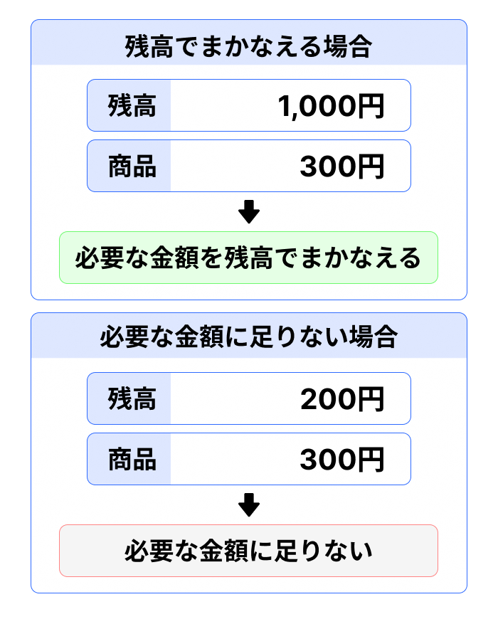

3. 残高を確認する
スマホ決済を利用するときは、現在どのくらいの残高があるかを確認します。
残高は、スマホ決済アプリで支払いや他の利用者とのやり取りに使うことができる金額です。現在の残高は、アプリのホーム画面から確認できます。

たとえば、残高が1,000円あり、300円の商品を購入する場合には、必要な金額を残高でまかなうことができます。
一方、残高が200円しかない場合には、300円の商品を残高だけで購入することはできません。

このように、支払いや他の利用者への送金を行うときには、必要な金額に対して現在の残高が十分かどうかを確認します。
残高が足りない場合には、利用できる金額を増やしてから操作を行います。残高を増やす方法については、次の章で説明します。
また、他の利用者から残高を受け取った場合には、受け取った金額が現在の残高に加わります。
ポイント
スマホ決済を利用するときは、現在の残高と、これから行う操作に必要な金額を確認します。